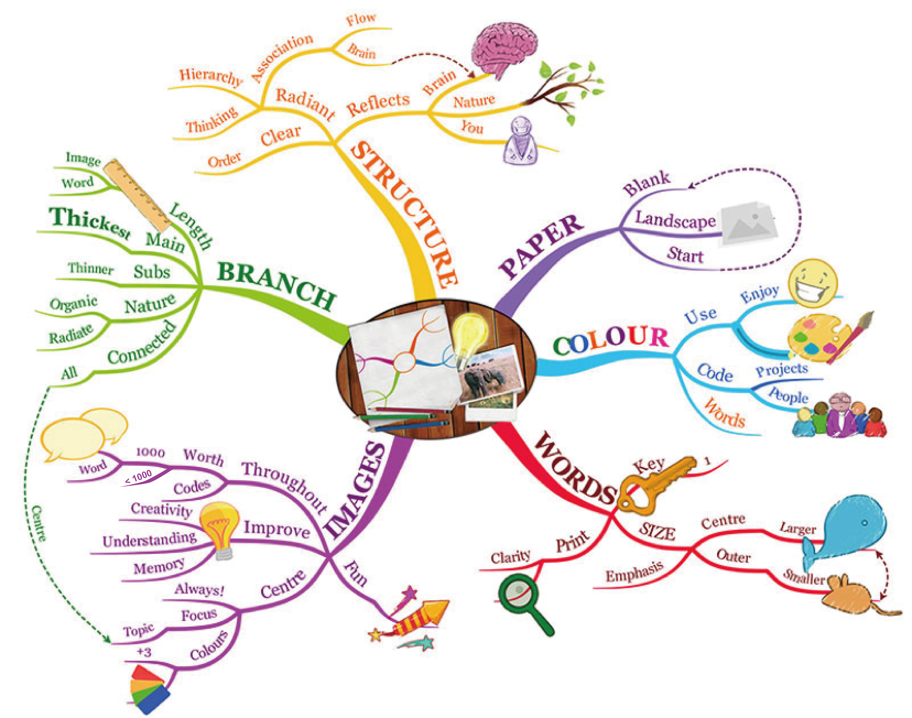

Create Geometry
Create a Polyline
Create a Area
Create a Rect
Create a Circle
Add
Print Defined Dots
Marching Ants
TODO
Defined Geometry
Geometry Handler
Single T2B Linear
Single B2T Linear
Single L2R Linear
Single R2L Linear
Double Linear
Radial Linear
Add Lighter
Undo
Modify
Animate
×
Ok
Interval
Ant Type
Rect
Circle
Self Defined
Others
Ant Gap
Type
Path
Boundary
Ant
Ok
Cancel